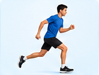
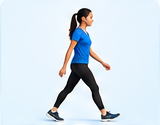
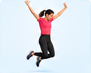
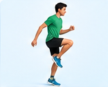
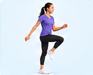
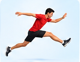
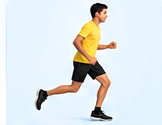
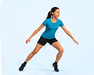

PHYSICAL EDUCATION
Learn the fundamental movements that help us move, balance, jump, run, and explore our environment.
Understanding basic locomotor movements

Locomotor skills are movements that allow the body to travel from one place to another. They are important for physical fitness, coordination, balance, agility, and participation in sports and everyday activities.
These movements help us develop confidence and control while performing different physical activities.
Explore each fundamental movement

Moving forward by placing one foot in front of the other while maintaining balance and control.
A faster locomotor movement where there is a brief period when both feet are off the ground.

Pushing off the ground with both feet and landing safely while developing power and coordination.

Moving upward or forward using one foot while maintaining control and balance.

A rhythmic movement combining a step and hop, alternating from one foot to the other.

Taking off from one foot and landing on the opposite foot while covering distance.

A forward movement where one foot leads while the other foot follows in a repeated pattern.

Moving sideways while keeping the body facing forward and maintaining a smooth rhythm.
Build stability, control, and coordination
Develop explosive power and athletic movement
Bend into a squat and jump upward explosively. Land softly and repeat.
Jump forward from both feet and land with control.
Alternate lunge positions through controlled explosive jumps.
Jump onto a stable low platform and step down safely.
Basic locomotor skills form the foundation of physical movement. Walking, running, jumping, hopping, skipping, leaping, galloping, and sliding help develop coordination, balance, agility, and confidence.
Combining these movements with single-leg balance activities and plyometric exercises can further improve physical performance.
↑ Back to Top